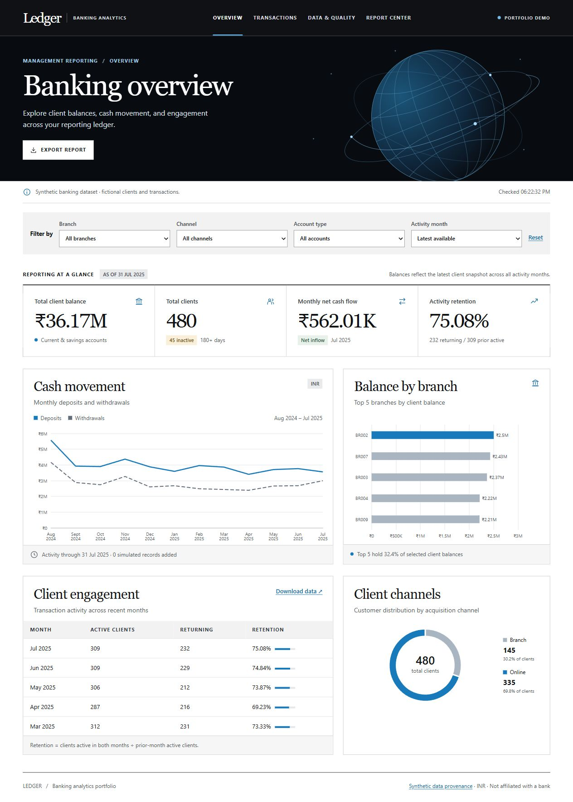
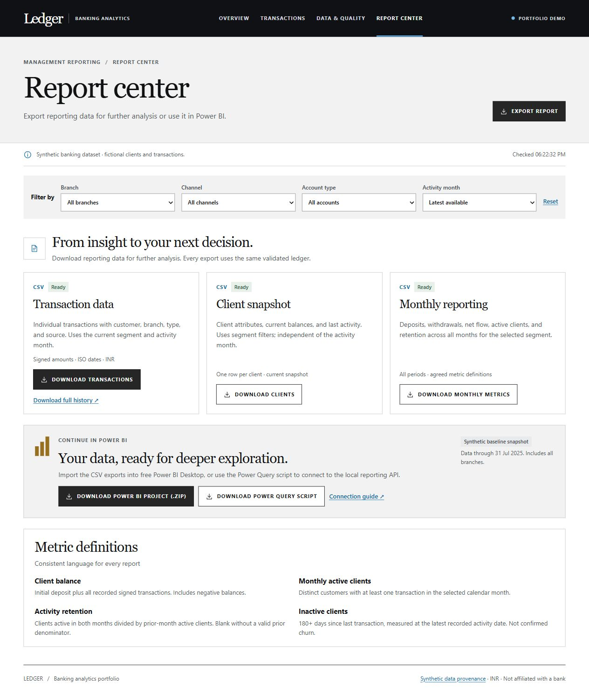

Browser and charts
Semantic HTML, CSS and JavaScript with Apache ECharts. Filters are sent to the same API used by exports.
JavaScriptApache EChartsAccessible UI
Ledger turns a validated banking ledger into an auditable dashboard for balances, cash movement, engagement and data quality. It is deployed as a full-stack Cloudflare Worker and deliberately uses fictional data.
Scope note: this is a portfolio demonstration, not a live bank connection or advisory system. Public writes are disabled; CSV uploads are validated as previews only.
One reporting definition feeds the dashboard, CSV exports and Power BI baseline.
Semantic HTML, CSS and JavaScript with Apache ECharts. Filters are sent to the same API used by exports.
Cloudflare Worker routes requests and runs validation/reporting logic against D1 in production or SQLite locally.
Known-client checks, signed amounts, valid dates, unique transaction IDs, idempotent retries and rollback-safe commits.
Filtered CSVs, a Power Query recipe and a PBIP project let a reviewer continue exploration in Power BI Desktop.
The public repository includes reproducible setup, test output and screenshots from the deployed baseline.


Planned extensions are clearly separated from the current demo.
Move from account balances to investable-asset monitoring.
Model synthetic portfolios, concentration and benchmark context.
Add role-based access, relationship notes, suitability checks and audit trails.